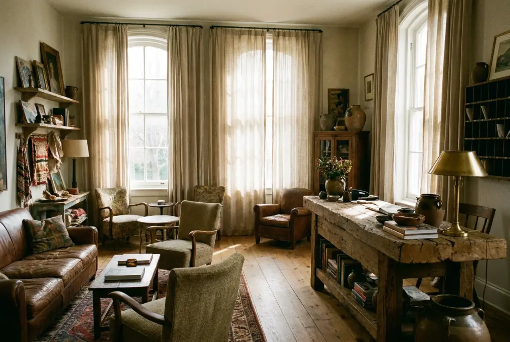
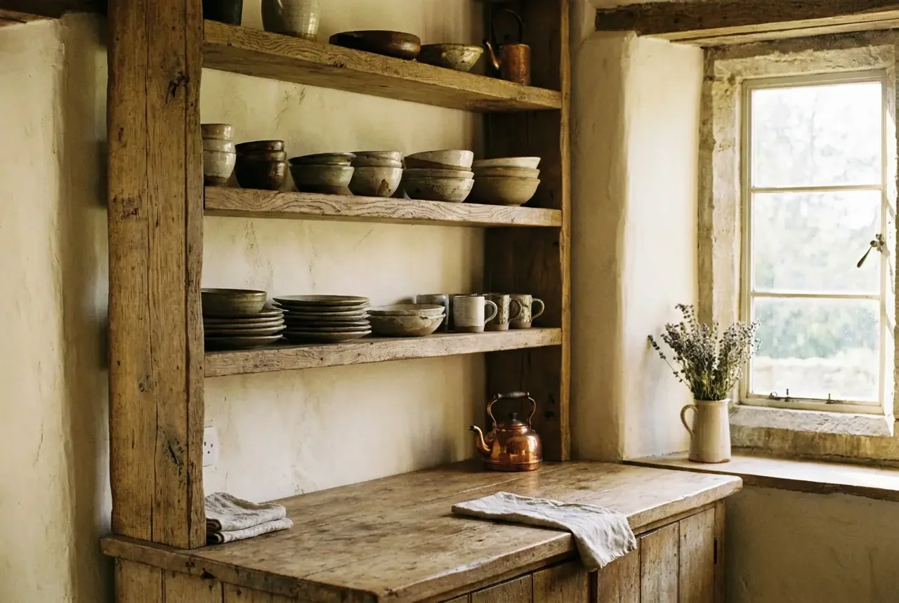
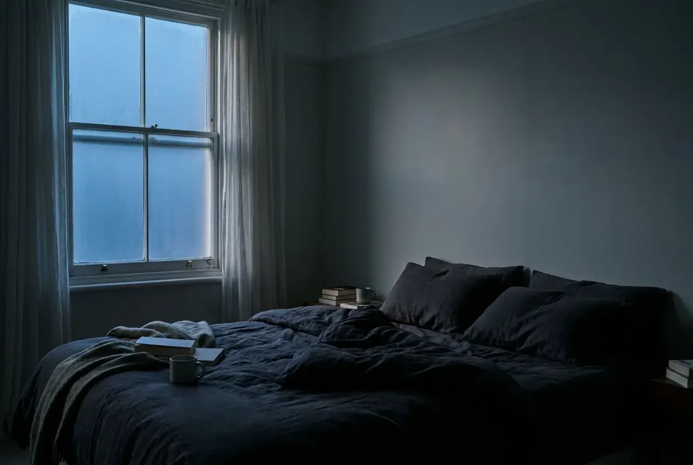
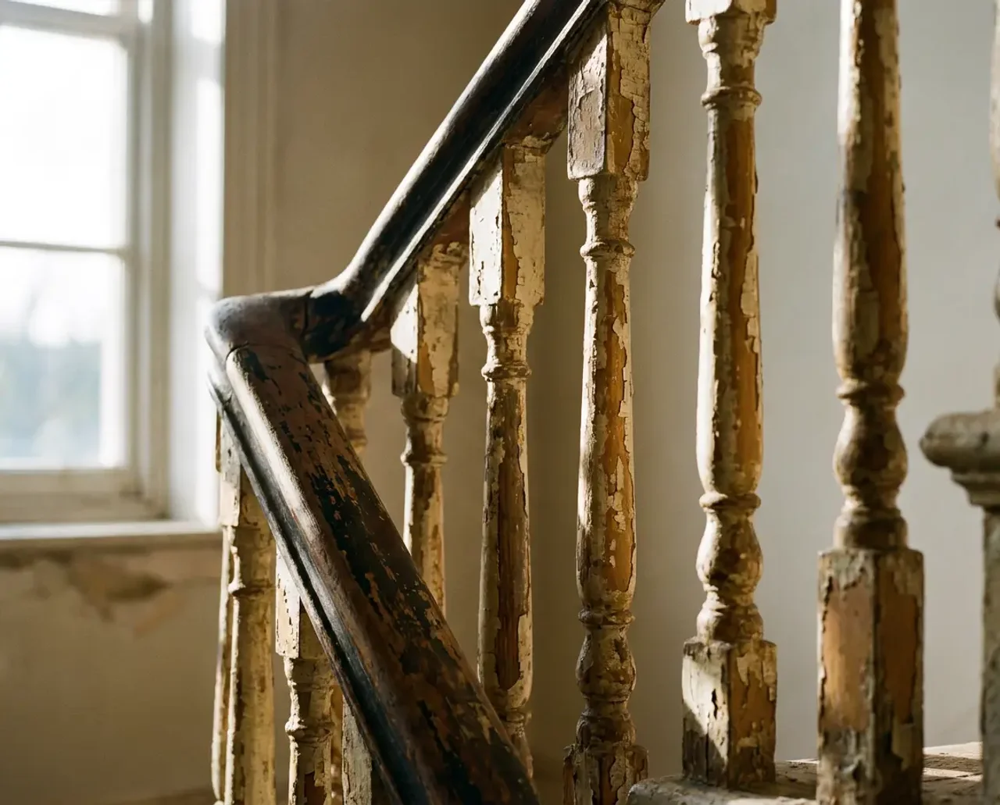
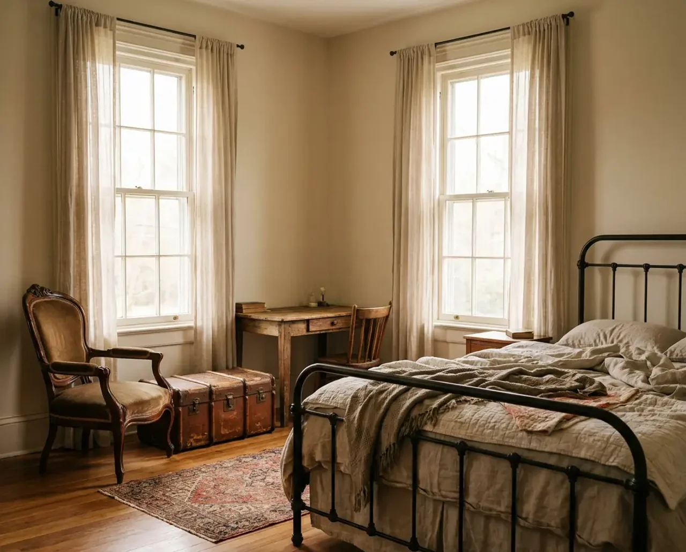

Interiors for people who already know what they don't want to repeat.

Fig. 01Sitting room, a Georgian townhouse. Photography — Studio Wren.
Studio Wren designs interiors for private residences and a small number of hospitality projects. Founded in 2015, the studio holds every commission to the same standard: nothing arrives because it was available. Every material, fixture and proportion is chosen in relation to what's already there — the light, the age of the building, the people who will actually use the room.1
The practice is deliberately small. A handful of projects run at any time, each seen through by the same two people from first site visit to final placement of the last object.
1 The studio's approach to material honesty was the subject of a short feature in The Local Review, 2023.
Restraint is not the absence of decision. It's the discipline of making fewer, better ones.

Fig. 02Kitchen, reclaimed oak and hand-plastered walls.
II. Residential
A Georgian house, restored — not renovated.
The brief was simple to state and hard to execute: keep what a hundred years had already gotten right, and repair the twenty that hadn't. Studio Wren stripped three later additions back to the original floor plan, re-plastered by hand, and sourced reclaimed oak flooring within four streets of the house to match its existing grain and wear.
The result reads as though nothing was done at all — which took considerably longer than doing something would have.

Fig. 03Principal bedroom, before first light.

Fig. 04Staircase detail, original 1820s balustrade retained.
III. Hospitality
A ten-room hotel that doesn't try to be a hotel.
Commissioned by a small hospitality group opening its second property, Studio Wren was asked to avoid every convention of boutique-hotel design — no signature colour, no designated photo corner, no branding louder than the building itself.
Furniture was sourced across four countries over eight months, mixing periods deliberately rather than curating a single "look." The result feels collected, not decorated — the studio's standard test for whether a room is finished.
Fig. 05Lobby, reception desk in reclaimed elm.

Fig. 06Room 4, corner suite.
IV. Notes
Working notes, unfiled.
On materials The ones that age well were never trying to look new.
On lighting Most rooms have too many light sources and not one good one.
On restraint The last ten percent of decisions — what to remove — takes as long as the first ninety.
On timing A room isn't finished when it's furnished. It's finished when nothing left in it needs explaining.
Contact
Studio Wren takes on a small number of projects each year, by referral and direct enquiry. London, and by appointment elsewhere.